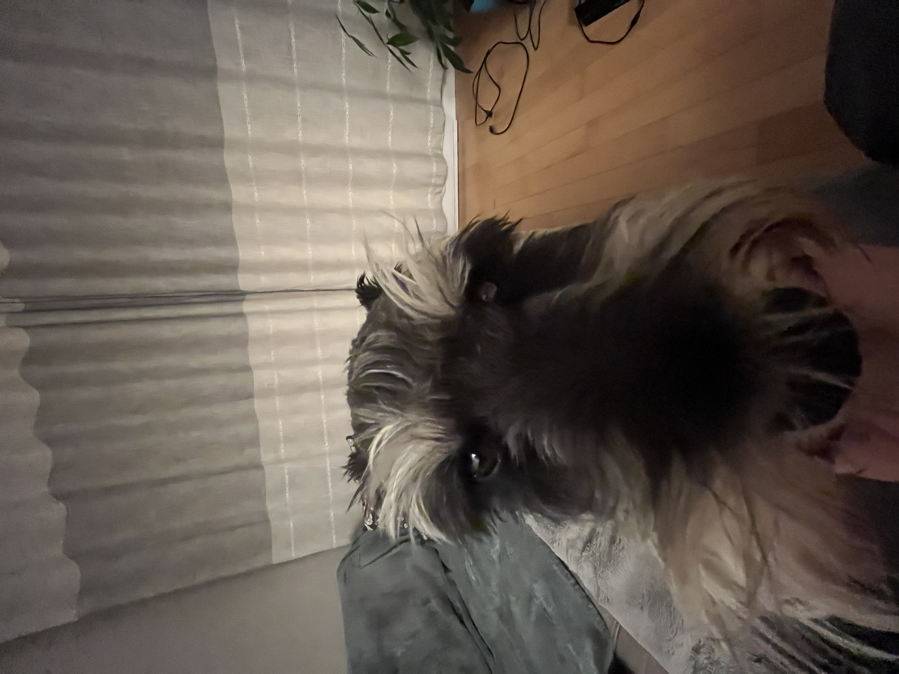

Je suis Yuta

Bonjour, je m'appelle Yuta. Je suis un schnauzer miniature.Je suis née au Kazakhstan. J'ai déménagé au Canada quand j'avais 6 mois.
Je suis parti en avion avec les grands-parents d'Alexis.
Mon passe-temps favori est de japper sur toutes les personnes que je vois passer sur la rue, mais aller pour des marches et aussi bien.
J'aime aussi manger , ainsi que courir après des balles.
Quand tout le monde part de la maison, je deviens triste , mais quand ils reviennent, j'ai une surcharge d'excitations et je saute partout.
Mes coordonnées
Sainte-Marthe-sur-le-Lac
Québec,Canada
J0N 1P0
Mes liens
Endroits à visiter à Tokyo
Collège
Me contacter